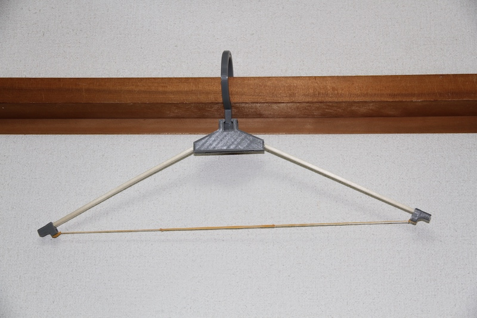
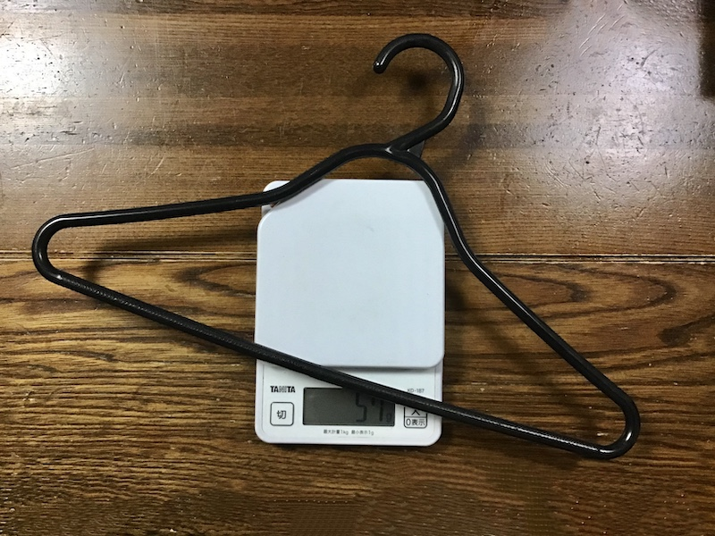

割り箸ハンガー
2020.11.09~
制作目的
キャンプや出張先などハンガーを要する場面は多いが、持ち運びの面で苦労することが多い...らしい。
して、前
回制作した割り箸テーブルのデータをいじくり簡易ハンガーを製作する。
11/09
このようなイメージで制作を行う。
サポートがズレて印刷失敗してしまった。
改善点が多く見つかったので、メモとしてここに記しておく。
11/11
試作１号完成

組み立て式でなく、一発で印刷できる形状 かつ、サポートが取り除きやすい形状にこだわった。
フックの角度を変更できる。

相当重量のある魔法使い見習いみたいなコートも掛けることができたので、十分実用化できると思われる。

普通のハンガーが57gなのに対して

こちらの簡易ハンガーは51gとなっている。
11/15
試作２号（完成版）完成
各パーツの収納が可能な形態にした。